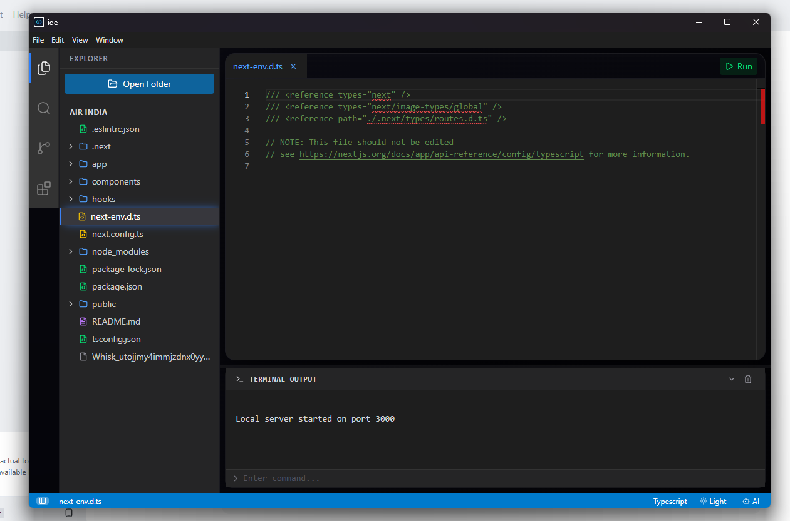

Monaco editor core
Simple IDE uses Monaco, the editor engine behind VS Code, for smooth editing, syntax support, and a familiar coding feel.
Simple IDE is a lightweight desktop code editor that combines Monaco editing, real file management, terminal execution, live preview, and optional AI help in one focused workspace.

It takes the core experience developers already like in larger editors and strips it down into a cleaner, lighter workspace that still feels powerful.
Simple IDE uses Monaco, the editor engine behind VS Code, for smooth editing, syntax support, and a familiar coding feel.
Open folders, browse project files, create and delete items, rename them, and move them with drag and drop.
Edit multiple files at once with a cleaner multi-tab layout, status bar details, and a panel-based screen structure.
Bring your own API key to explain code, fix problems, optimize snippets, and apply generated code directly into the editor.
Simple IDE is especially useful for students, beginners, and developers who want a straightforward alternative to heavier editors without giving up the features that matter.
Browse real files and work with your existing local project structure.
Write code in Monaco, switch files in tabs, then run or preview without breaking focus.
Get explanations, fixes, and optimizations while keeping full control over your provider and key.
The page now uses your actual UI and branding so visitors immediately understand that Simple IDE is a usable desktop app, not just a concept.
It keeps the experience simple: editor, files, terminal, preview, and AI support in one place.
Less setup, faster startThe AI model choice is yours. Add your own API key instead of being locked into a subscription.
User-controlled AIIt is especially approachable for learners and developers who want a lighter VS Code-style workflow.
Built for practical everyday useIt is a strong fit for students, beginner to intermediate developers, and anyone who wants a lightweight coding environment with modern essentials.
Yes. Simple IDE is packaged as a desktop application, so the editor itself does not require a browser to run.
It focuses on a cleaner workflow: core IDE features, live preview, and optional AI help without unnecessary complexity or forced cloud lock-in.
Lightweight desktop IDE with Monaco, live preview, terminal, and optional AI.